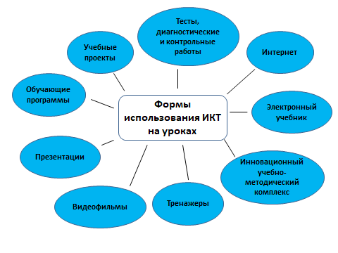

АКТ-ның білімге әсері
Ақпараттық-коммуникациялық технологиялар (АКТ) білім мен оқуға үлкен әсер етті. Интернетте нақты уақыт режимінде байланыс орнатуға мүмкіндік беретін электрондық пошта және чат бөлмелері сияқты басқа ақпараттық және коммуникациялық технологиялар құралдары да бар. Жыл сайын дыбыс пен сурет сапасы айтарлықтай жақсарады, сондай-ақ жіберілетін және қабылданған файлдардың көлемі артады. Арнайы жабдықты және бағдарламалық қамтамасыз етуді қолдану арқылы Интернет арқылы аудио және бейне конференциялар өткізуге болады.
Ақпараттық-коммуникациялық технологиялардың желілік құралдары оқу, әдістемелік және ғылыми материалдарды кеңінен пайдалануға, сондай-ақ ғылыми-зерттеу қызметін құруға және имитациялауға, нақты уақыт режимінде виртуалды оқу сабақтарын өткізуге мүмкіндік береді. Ашық және қашықтықтан оқытудың маңызды технологияларына бейне жазба мен теледидар жатады.

Міне, АКТ оқыту ландшафтын өзгерткен кейбір жолдар:
- Білімге қол жеткізу: АКТ ақпарат пен білімнің үлкен көлеміне бірден қол жеткізуге мүмкіндік берді. Интернеттің арқасында студенттер әлемнің түкпір-түкпірінен білім беру ресурстарына, соның ішінде оқулықтарға, бейнематериалдарға, онлайн курстарға және зерттеу жұмыстарына қол жеткізе алады.
- Интерактивті оқыту: АКТ оқытуды қызықты әрі интерактивті етті. Бейнелер, анимациялар және симуляциялар сияқты мультимедиялық құралдардың көмегімен оқушылар күрделі ұғымдарды оңайырақ түсіне алады. Виртуалды шындық пен толықтырылған шындық технологиялары да иммерсивті оқытуды жасауға мүмкіндік берді.
- Жеке оқыту: АКТ мұғалімдерге әр оқушының оқу стилі мен оқу қарқынына қарай оқуды жекелендіруге мүмкіндік берді. Оқытуды басқару жүйелерінің (LMS) көмегімен мұғалімдер оқушылардың үлгерімін бақылай алады, жекелендірілген кері байланыс бере алады және жекелендірілген оқу материалдарын ұсына алады.
- Ынтымақтастықпен оқыту: АКТ оқушылардың қай жерде болса да бір-бірімен ынтымақтасуын жеңілдетті. Онлайн талқылау форумдары, әлеуметтік медиа және басқа да ынтымақтастық құралдары студенттерге идеялармен бөлісуге, жобалармен жұмыс істеуге және бір-бірінен үйренуге мүмкіндік береді.
- Оқуға қолжетімділік: АКТ адамдарға әлемнің кез келген жерінен оқуға және кәсіби дамуға қол жеткізуге мүмкіндік берді. Онлайн курстар, вебинарлар және виртуалды оқу сессиялары адамдарға жаңа дағдыларды үйренуге және өз саласындағы соңғы жаңалықтардан хабардар болуға мүмкіндік береді.
- Жақсартылған бағалау: АКТ бағалауды тиімдірек және тиімді етті. Онлайн викториналар мен бағалаулар арқылы мұғалімдер оқушылардың түсінігін жылдам бағалай алады және кері байланыс бере алады. Сонымен қатар, AI негізіндегі бағалау құралдары студенттерге дәлірек және жекелендірілген кері байланысты қамтамасыз ете алады.
Қорытындылай келе, АКТ оқытуды қолжетімді, тартымды және дербестендірілген ету арқылы білім мен оқуды өзгертті. Технологияның тұрақты дамуымен біз оқыту тәжірибесін одан әрі жақсартатын бұдан да инновациялық шешімдерді күтуге болады.